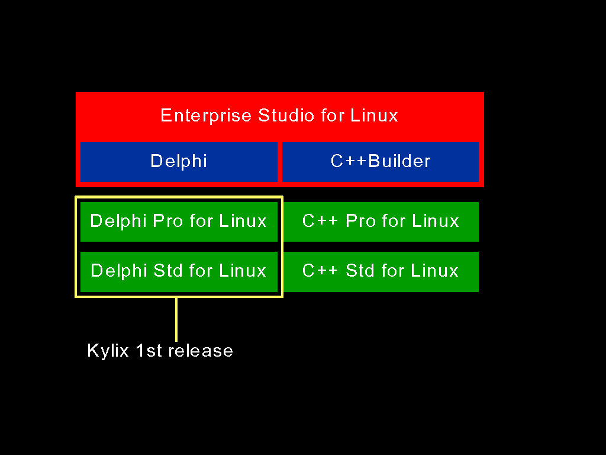
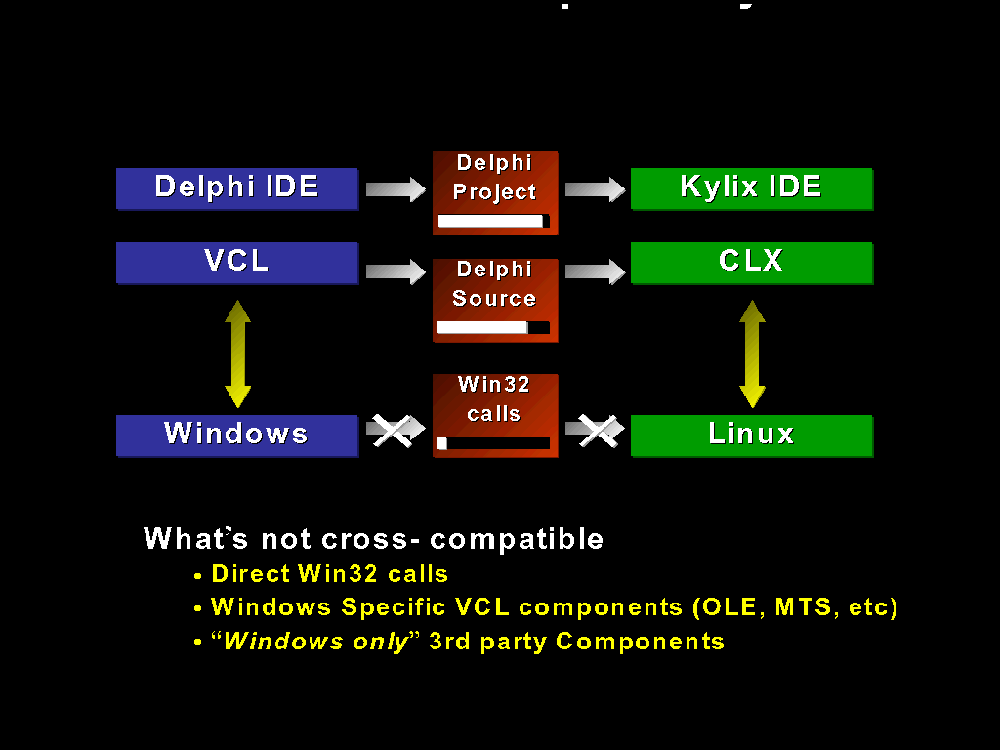
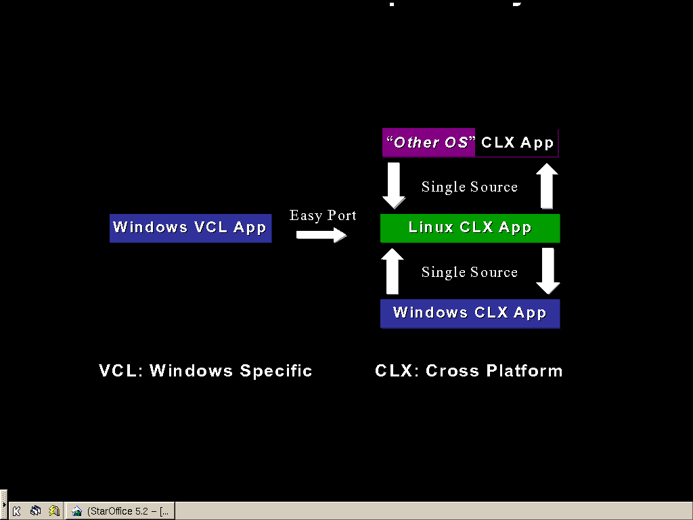

Welcome
Charlie Calvert
Agenda
- Kylix project overview
- Compiler & RTL
- CLX
- dbExpress and MIDAS (DataCLX)
- NetCLX
Kylix Project Overview
- What is the Kylix project?
- What are the goals for Kylix?
- How compatible will Kylix be with Delphi?
- What is new?
- What will be missing?
What is Kylix?
Kylix is a high-performance native Linux rapid application development tool
that radically speeds and simplifies development through component based visual
programming
Kylix is about Applications
- GCC, Emacs, CodeFusion, etc are about:
- Kernel and Device Drivers
- Linux Infrastructure
- Kylix is about
- Desktop Applications
- Client/Server and multi-tier Database Applications
- Web Server Applications
Kylix Overview
- Native Code Generation (ELF Object Format)
- Native Delphi Linux Compiler and Debugger
- Two-way Visual Development
- Delphi IDE
- Cross-platform GUI, Database, and Web Development
- CLX (Component Library for Cross-Platform)
Kylix Products
Windows / Linux Delphi Comparison

Windows / Linux Compatibility
Windows / Linux Compatibility
CLX Cross-platform Technologies
- VisualCLX
- Native Cross-platform GUI Components and graphics
- DataCLX � Client Data Access Components
- Local, C/S, and n-tier based on today�s MIDAS Client Datasets
- SOAP/XML Distributed MIDAS Data Remoting
- dbExpress Crossplatform Database API
- MySQL, InterBase, and other major SQL Database Servers
- NetCLX
- Apache DSO and CGI WebBroker
- XML / DHTML (in Enterprise Studio)
- TCP/IP Sockets
Kylix Developer Benefits
- Fast time to market
- component based visual development
- leverage existing Delphi skills and code
- Lower barrier to entry
- simplifies complex Linux development technologies
- Leverage existing Delphi and Visual Basic knowledge
- High performance native applications
- no byte code, virtual machines, or interpreted scripts (Perl, Python)
What Kylix brings to Linux
- An "Instant Army" of skilled application developers for Linux
- Millions of Delphi, C++Builder, and Visual Basic developers world wide
- Hundreds of thousands of applications built in Delphi today
- Desktop, Database, and Web applications
- Over 500 third party tool and component vendors
- Third party development for Kylix began March 20th, 2000
Kylix Philosophies
- Open Source Development
- Kylix will support both Open Source development and proprietary development
depending on which model the developer chooses
- It is our goal to enable and fully support GNU General Public licensed
application development
- Desktop Support
- Kylix applications and IDE will operate perfectly well in both KDE and GNOME
desktop environments
- Kylix aims ultimately to support both KDE and GNOME themes (KDE themes in 1st
release)
- Kernel Development
- Kylix is about applications
- GCC and Emacs are for Kernel and device driver development
How Compatible Will Kylix Be With Delphi 5?
- Application developers will see a great deal that is familiar.
- Goal: large application moved to Linux < 1 month.
- Most component names will be the same.
- Unit names have been changed.
- Most property names will be the same.
- Some new properties as well as some missing properties.
- Component developers will see substantial differences.
- Classes.Pas is substantially the same.
- Lots of new RTL routines
- Non-visual components very similar
- Different - controls, graphics, menus, etc.
Problems Porting to Linux for Applications?
- Changes to the API
- Components and properties
- Subtle assumption about the file system
- No drive letters
- Case sensitivity
- Missing 3rd party components
- Need components ported to Linux
What Is New to Kylix?
- CLX, a cross platform component library
- BaseCLX � classes, SysUtils, �
- VisualCLX on top of Qt from Troll Tech
- DataCLX on top of dbExpress and MIDAS
- NetCLX � WebBroker, InternetExpress, �
- CLX will also run on Windows
- CLX will be included in future Delphi versions
- Windows VCL will continue to be developed
What Will Be Missing From Borland?
- BDE and the associated components
- No TTable, TQuery, etc. � Ancestors will be there, similar components
available
- dbExpress is a cross platform alternative
- Compatibility for Windows 3.1
- Any ActiveX components or OLE/ActiveX support (Typelibrary editor)
- We�re working with Red Hat, Trolltech, Helix Code and others to define a
component spec for Linux
- Various other components
Preparing Components & Applications
- Examine your code for windows-isms.
- File name assumptions, etc.
- Examine how many windows messages you handle directly.
- Look for a VCL equivalent. If it�s not there, let us know.
- Examine how many windows calls you make directly.
- TCanvas will be almost the same on Windows / Linux.
- Graphics Context is similar to Device Context
- Examine how reliant you are on Microsoft APIs or extensions.
- ODBC, ADO, Mapi, �
When Can I Get it?
Facts
- There is no Bitmap depth in QGraphics of pf24bit, its either 16 or 32.
- To change what keys will get trhrough: InputKeys := InputKeys + [ikArrows];
Questions and (Hopefully) Answers